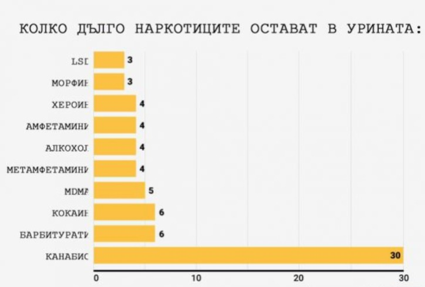
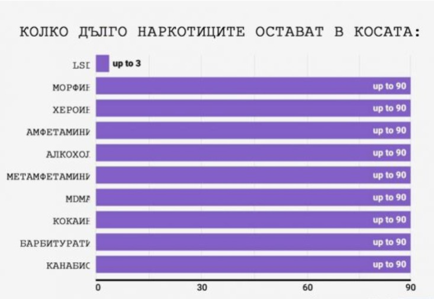

Тестове за наркотици
В момента, в който се вземе даден наркотик - независимо дали се пуши или се
поглъща - тялото ни започва да го разлага. В процеса се произвеждат метаболити или
странични продукти на дрогата, които могат да се задържат в кръвта, урината (и дори в косата)
дълго след като първоначалните ефекти на дрогата са отминали.
Следите от тези метаболити са тези,
които търсят тестовете за наркотици,
тъй като те са добър показател, че някой действително е използвал
наркотик, вместо случайно да е бил в контакт с него.
И докато тестовете за наркотици на базата на косата са сравнително точни,
тестовете за кръв и урина не могат да открият по-голямата част от наркотиците,
стига да не са използували около седмица. Хероинът, например, обикновено е неоткриваем
в урината след три до пет дни.
Както показва графиката по-долу, в кръвта остават само 12 часа или по-малко
следи от дроги като LSD, морфин, хероин, амфетамини и алкохол:

За урината, прозорецът за откриване е малко по-широк - около 3 до 6 дни за LSD,
MDMA и морфин например - и до 30 дни за марихуана:

Тестовете за наркотици на базата на проби от коса са най-точни, както показва
графиката по-долу, тъй като следи от всичко - от алкохол до морфин -
могат да останат във фоликула до 90 дни:
